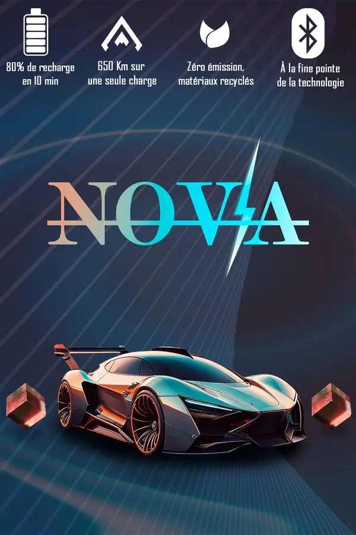
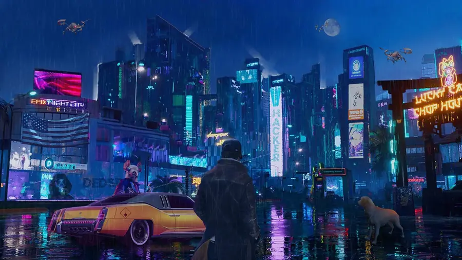

Pièces courtes · Hiver 2025 · Exercices
Pièces courtes
Trois exercices : un logo animé, une affiche et un photomontage.
Les trois pièces
-
Phoenix
Un logo de studio en forme de phénix, dessiné en vectoriel (Illustrator) puis animé (After Effects). Le phénix s’embrase et se reflète sur un sol texturé, avec un habillage sonore. Vidéo de 8 s.
Le logo, en vectoriel L’animation de 8 secondes, avec son. -
NOVA
Une affiche publicitaire pour une voiture électrique fictive, qui surgit d’un tunnel de lumière. Photomontage (Photoshop, Illustrator).

L’affiche -
Ville néon
Un photomontage Photoshop d’une ville cyberpunk sous la pluie, construit calque par calque, inspiré de l’univers de Watch Dogs.

Le photomontage